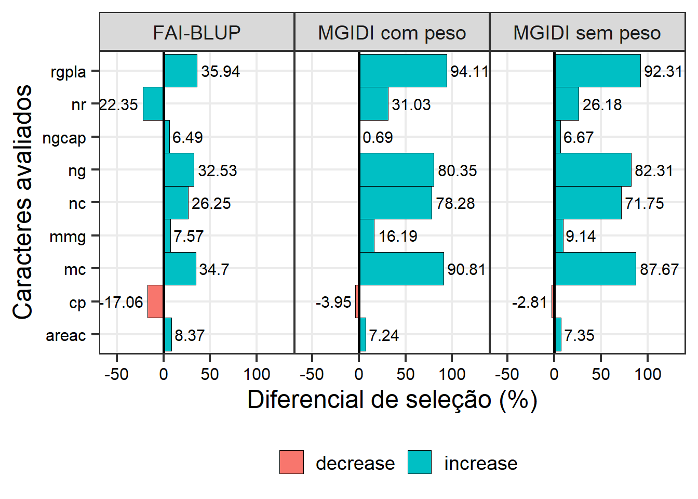
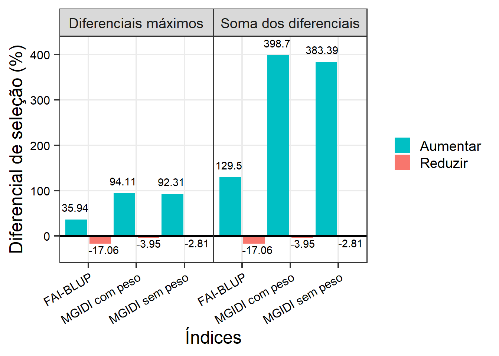

08: Índices FAI-BLUP e MGIDI na seleção de genótipos de linho
% Analysis
1 Libraries
To reproduce the examples of this material, the R packages the following packages are needed.
2 Dados
3 Índice MGIDI
3.1 Sem pesos
mod_mgidi <-
df |>
mgidi(ideotype = c("l, h, h, h, h, h, h, h, h"),
SI = 25)
##
## -------------------------------------------------------------------------------
## Principal Component Analysis
## -------------------------------------------------------------------------------
## # A tibble: 9 × 4
## PC Eigenvalues `Variance (%)` `Cum. variance (%)`
## <chr> <dbl> <dbl> <dbl>
## 1 PC1 4.43 49.2 49.2
## 2 PC2 1.72 19.1 68.3
## 3 PC3 1.03 11.4 79.8
## 4 PC4 0.94 10.4 90.2
## 5 PC5 0.62 6.86 97.1
## 6 PC6 0.23 2.56 99.6
## 7 PC7 0.02 0.24 99.9
## 8 PC8 0.01 0.11 100.
## 9 PC9 0 0.02 100
## -------------------------------------------------------------------------------
## Factor Analysis - factorial loadings after rotation-
## -------------------------------------------------------------------------------
## # A tibble: 9 × 6
## VAR FA1 FA2 FA3 Communality Uniquenesses
## <chr> <dbl> <dbl> <dbl> <dbl> <dbl>
## 1 cp 0.13 -0.13 0.78 0.65 0.35
## 2 nc -0.9 0.13 -0.32 0.93 0.07
## 3 ng -0.93 -0.12 -0.27 0.95 0.05
## 4 areac -0.55 -0.18 0.31 0.44 0.56
## 5 nr -0.32 -0.18 -0.67 0.58 0.42
## 6 mc -0.95 0.11 -0.25 0.97 0.03
## 7 rgpla -0.95 0.12 -0.23 0.97 0.03
## 8 ngcap -0.18 -0.92 0.08 0.88 0.12
## 9 mmg -0.24 0.86 0.06 0.81 0.19
## -------------------------------------------------------------------------------
## Comunalit Mean: 0.7976177
## -------------------------------------------------------------------------------
## Selection differential
## -------------------------------------------------------------------------------
## # A tibble: 9 × 8
## VAR Factor Xo Xs SD SDperc sense goal
## <chr> <chr> <dbl> <dbl> <dbl> <dbl> <chr> <dbl>
## 1 nc FA1 33.5 57.6 24.0 71.8 increase 100
## 2 ng FA1 216. 394. 178. 82.3 increase 100
## 3 areac FA1 0.394 0.423 0.0290 7.35 increase 100
## 4 mc FA1 1.64 3.07 1.43 87.7 increase 100
## 5 rgpla FA1 1.22 2.34 1.12 92.3 increase 100
## 6 ngcap FA2 6.47 6.90 0.431 6.67 increase 100
## 7 mmg FA2 5.60 6.11 0.511 9.14 increase 100
## 8 cp FA3 27.6 26.8 -0.775 -2.81 decrease 100
## 9 nr FA3 1.29 1.62 0.337 26.2 increase 100
## ------------------------------------------------------------------------------
## Selected genotypes
## -------------------------------------------------------------------------------
## G48 G228 G4 G13 G222 G9 G31 G10 G23 G14 G36 G17 G21 G3 G29 G215
## -------------------------------------------------------------------------------3.2 Com pesos
mod_mgidi_peso <-
df |>
mgidi(ideotype = c("l, h, h, h, h, h, h, h, h"),
weights = c(2, 5, 5, 1, 1, 5, 5, 2, 2),
SI = 25)
##
## -------------------------------------------------------------------------------
## Principal Component Analysis
## -------------------------------------------------------------------------------
## # A tibble: 9 × 4
## PC Eigenvalues `Variance (%)` `Cum. variance (%)`
## <chr> <dbl> <dbl> <dbl>
## 1 PC1 4.43 49.2 49.2
## 2 PC2 1.72 19.1 68.3
## 3 PC3 1.03 11.4 79.8
## 4 PC4 0.94 10.4 90.2
## 5 PC5 0.62 6.86 97.1
## 6 PC6 0.23 2.56 99.6
## 7 PC7 0.02 0.24 99.9
## 8 PC8 0.01 0.11 100.
## 9 PC9 0 0.02 100
## -------------------------------------------------------------------------------
## Factor Analysis - factorial loadings after rotation-
## -------------------------------------------------------------------------------
## # A tibble: 9 × 6
## VAR FA1 FA2 FA3 Communality Uniquenesses
## <chr> <dbl> <dbl> <dbl> <dbl> <dbl>
## 1 cp 0.13 -0.13 0.78 0.65 0.35
## 2 nc -0.9 0.13 -0.32 0.93 0.07
## 3 ng -0.93 -0.12 -0.27 0.95 0.05
## 4 areac -0.55 -0.18 0.31 0.44 0.56
## 5 nr -0.32 -0.18 -0.67 0.58 0.42
## 6 mc -0.95 0.11 -0.25 0.97 0.03
## 7 rgpla -0.95 0.12 -0.23 0.97 0.03
## 8 ngcap -0.18 -0.92 0.08 0.88 0.12
## 9 mmg -0.24 0.86 0.06 0.81 0.19
## -------------------------------------------------------------------------------
## Comunalit Mean: 0.7976177
## -------------------------------------------------------------------------------
## Selection differential
## -------------------------------------------------------------------------------
## # A tibble: 9 × 8
## VAR Factor Xo Xs SD SDperc sense goal
## <chr> <chr> <dbl> <dbl> <dbl> <dbl> <chr> <dbl>
## 1 nc FA1 33.5 59.8 26.2 78.3 increase 100
## 2 ng FA1 216. 390. 174. 80.3 increase 100
## 3 areac FA1 0.394 0.423 0.0286 7.24 increase 100
## 4 mc FA1 1.64 3.12 1.48 90.8 increase 100
## 5 rgpla FA1 1.22 2.36 1.15 94.1 increase 100
## 6 ngcap FA2 6.47 6.51 0.0449 0.694 increase 100
## 7 mmg FA2 5.60 6.50 0.906 16.2 increase 100
## 8 cp FA3 27.6 26.5 -1.09 -3.95 decrease 100
## 9 nr FA3 1.29 1.69 0.400 31.0 increase 100
## ------------------------------------------------------------------------------
## Selected genotypes
## -------------------------------------------------------------------------------
## G228 G4 G48 G13 G222 G31 G9 G36 G28 G29 G10 G21 G23 G41 G14 G17
## -------------------------------------------------------------------------------4 FAI-BLUP
mod_fai <-
df |>
column_to_rownames("gen") |>
fai_blup(DI = c("min, max, max, max, max, max, max, max, max"),
UI = c("max, min, min, min, min, min, min, min, min"),
SI = 25)
##
## -----------------------------------------------------------------------------------
## Principal Component Analysis
## -----------------------------------------------------------------------------------
## eigen.values cumulative.var
## PC1 4.43 49.23
## PC2 1.72 68.31
## PC3 1.03 79.76
## PC4 0.94 90.20
## PC5 0.62 97.06
## PC6 0.23 99.63
## PC7 0.02 99.87
## PC8 0.01 99.98
## PC9 0.00 100.00
##
## -----------------------------------------------------------------------------------
## Factor Analysis
## -----------------------------------------------------------------------------------
## FA1 FA2 FA3 comunalits
## cp -0.13 0.13 0.78 0.65
## nc -0.90 0.13 0.32 0.93
## ng -0.93 -0.12 0.27 0.95
## areac -0.55 -0.18 -0.31 0.44
## nr -0.32 -0.18 0.67 0.58
## mc -0.95 0.11 0.25 0.97
## rgpla -0.95 0.12 0.23 0.97
## ngcap -0.18 -0.92 -0.08 0.88
## mmg -0.24 0.86 -0.06 0.81
##
## -----------------------------------------------------------------------------------
## Comunalit Mean: 0.7976177
## Selection differential
## -----------------------------------------------------------------------------------
## VAR Factor Xo Xs SD SDperc sense goal
## 1 nc 1 33.5151515 42.3125000 8.79734848 26.248870 increase 100
## 2 ng 1 216.0757576 286.3750000 70.29924242 32.534535 increase 100
## 3 areac 1 0.3942657 0.4272672 0.03300152 8.370376 increase 100
## 4 mc 1 1.6351515 2.2025000 0.56734848 34.696998 increase 100
## 5 rgpla 1 1.2174242 1.6550000 0.43757576 35.942750 increase 100
## 6 ngcap 2 6.4669836 6.8869142 0.41993055 6.493453 increase 100
## 7 mmg 2 5.5972761 6.0208227 0.42354665 7.567014 increase 100
## 8 cp 3 27.5560606 22.8562500 -4.69981061 -17.055452 decrease 100
## 9 nr 3 1.2878788 1.0000000 -0.28787879 -22.352941 increase 0
##
## -----------------------------------------------------------------------------------
## Selected genotypes
## G48 G31 G9 G28 G8 G35 G5 G17 G15 G21 G12 G222 G30 G228 G23 G13
## -----------------------------------------------------------------------------------5 Ganhos
5.1 Individuais
gmgidisp <-
gmd(mod_mgidi) |>
select(VAR, sense, mgidi_sp = SDperc)
gmgidicp <-
gmd(mod_mgidi_peso) |>
select(VAR, mgidi_cp = SDperc)
gfai <-
gmd(mod_fai) |>
select(VAR, fai = SDperc)
bind <-
reduce(list(gmgidisp, gmgidicp, gfai), left_join) |>
pivot_longer(-c(VAR, sense)) |>
mutate(sense = ifelse(sense == "decrease", "Reduzir", "Aumentar"))
facet_labels <- c("FAI-BLUP", "MGIDI com peso", "MGIDI sem peso")
names(facet_labels) <- c("fai", "mgidi_cp", "mgidi_sp")
ggplot(bind, aes(value, VAR)) +
geom_col(position = position_dodge(),
aes(fill = sense),
width = 1,
linewidth = 0.1,
color = "black") +
geom_text(aes(label = round(value, 2),
hjust = ifelse(value > 0, -0.1, 1.1)),
size = 4) +
facet_wrap(~name,
labeller = labeller(name = facet_labels)) +
theme_bw(base_size = 18) +
theme(axis.text = element_text(size = 12, color = "black"),
axis.ticks.length = unit(0.2, "cm"),
panel.grid.minor = element_blank(),
legend.title = element_blank(),
# legend.position = "bottom",
panel.spacing.x = unit(0, "cm")) +
scale_fill_hue(direction = -1) +
geom_vline(xintercept = 0, linetype = 1, linewidth = 1) +
scale_x_continuous(expand = expansion(c(0.4, 0.4))) +
labs(y = "Caracteres avaliados",
x = "Diferencial de seleção (%)") +
geom_vline(xintercept = 0)
ggsave("figs/gains_mgidi_fai.jpg",
width = 10,
height = 5)5.2 Totais
tot_fai <- mod_fai[["total_gain"]][["ID1"]] |> mutate(indice = "FAI-BLUP")
tot_mgidi_cp <- mod_mgidi_peso$stat_gain |> mutate(indice = "MGIDI com peso")
tot_mgidi_sp <- mod_mgidi$stat_gain |> mutate(indice = "MGIDI sem peso")
totais <-
bind_rows(tot_fai, tot_mgidi_cp, tot_mgidi_sp) |>
select(sense, max, sum, indice) |>
pivot_longer(cols = max:sum) |>
mutate(sense = ifelse(sense == "decrease", "Reduzir", "Aumentar"))
facet_labels <- c("Diferenciais máximos", "Soma dos diferenciais")
names(facet_labels) <- c("max", "sum")
ggplot(totais, aes(indice, value)) +
geom_col(aes(fill = sense),
position = position_dodge(width = 1)) +
facet_wrap(~name,
# scales = "free",
labeller = labeller(name = facet_labels)) +
theme_bw(base_size = 18) +
theme(axis.text = element_text(size = 12, color = "black"),
axis.text.x = element_text(angle = 30, vjust = 1, hjust = 1),
axis.ticks.length = unit(0.2, "cm"),
panel.grid.minor = element_blank(),
legend.title = element_blank(),
# legend.position = "bottom",
panel.spacing.x = unit(0, "cm")) +
scale_fill_hue(direction = -1) +
labs(x = "Índices",
y = "Diferencial de seleção (%)") +
geom_text(aes(label = round(value, 2),
vjust = ifelse(value < 0, 1.2, -1),
hjust = ifelse(value > 0, 1, 0))) +
scale_y_continuous(expand = expansion(0.1)) +
geom_hline(yintercept = 0,
linewidth = 0.9)
ggsave("figs/total_gains_mgidi_fai.jpg",
width = 9,
height = 7)
6 Venn plot
7 Section info
sessionInfo()
## R version 4.2.2 (2022-10-31 ucrt)
## Platform: x86_64-w64-mingw32/x64 (64-bit)
## Running under: Windows 10 x64 (build 22621)
##
## Matrix products: default
##
## locale:
## [1] LC_COLLATE=Portuguese_Brazil.utf8 LC_CTYPE=Portuguese_Brazil.utf8
## [3] LC_MONETARY=Portuguese_Brazil.utf8 LC_NUMERIC=C
## [5] LC_TIME=Portuguese_Brazil.utf8
##
## attached base packages:
## [1] stats graphics grDevices utils datasets methods base
##
## other attached packages:
## [1] metan_1.18.0 lubridate_1.9.2 forcats_1.0.0 stringr_1.5.0
## [5] dplyr_1.1.2 purrr_1.0.1 readr_2.1.4 tidyr_1.3.0
## [9] tibble_3.2.1 ggplot2_3.4.2 tidyverse_2.0.0 rio_0.5.29
##
## loaded via a namespace (and not attached):
## [1] jsonlite_1.8.7 splines_4.2.2 cellranger_1.1.0
## [4] yaml_2.3.7 ggrepel_0.9.3 numDeriv_2016.8-1.1
## [7] pillar_1.9.0 lattice_0.20-45 glue_1.6.2
## [10] digest_0.6.33 RColorBrewer_1.1-3 polyclip_1.10-4
## [13] minqa_1.2.5 colorspace_2.1-0 htmltools_0.5.5
## [16] Matrix_1.6-0 plyr_1.8.8 pkgconfig_2.0.3
## [19] haven_2.5.3 patchwork_1.1.2 scales_1.2.1
## [22] tweenr_2.0.2 openxlsx_4.2.5.2 tzdb_0.4.0
## [25] lme4_1.1-34 ggforce_0.4.1 timechange_0.2.0
## [28] generics_0.1.3 farver_2.1.1 withr_2.5.0
## [31] cli_3.6.1 magrittr_2.0.3 readxl_1.4.3
## [34] evaluate_0.21 GGally_2.1.2 fansi_1.0.4
## [37] nlme_3.1-160 MASS_7.3-60 foreign_0.8-83
## [40] textshaping_0.3.6 tools_4.2.2 data.table_1.14.8
## [43] hms_1.1.3 lifecycle_1.0.3 munsell_0.5.0
## [46] zip_2.3.0 compiler_4.2.2 systemfonts_1.0.4
## [49] rlang_1.1.1 grid_4.2.2 nloptr_2.0.3
## [52] rstudioapi_0.15.0 htmlwidgets_1.6.2 labeling_0.4.2
## [55] rmarkdown_2.23 boot_1.3-28 gtable_0.3.3
## [58] lmerTest_3.1-3 reshape_0.8.9 curl_5.0.1
## [61] R6_2.5.1 knitr_1.43 fastmap_1.1.1
## [64] utf8_1.2.3 mathjaxr_1.6-0 ragg_1.2.5
## [67] stringi_1.7.12 Rcpp_1.0.11 vctrs_0.6.3
## [70] tidyselect_1.2.0 xfun_0.39